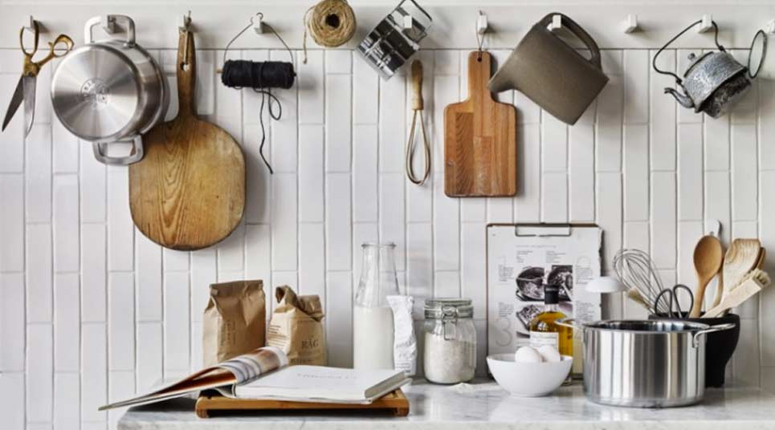

<!doctype html>
<html lang="es">
<head>
    <meta charset="utf-8">
    <title>Página principal recetas.</title>
    <link rel="stylesheet" href="css/macarrones.css">
    <body background="https://previews.123rf.com/images/markovka/markovka1308/markovka130800397/21240568-colorido-patr%C3%B3n-floral-en-estilo-de-dibujos-animados-sin-fisuras-patr%C3%B3n-se-puede-utilizar-para-fondo.jpg"></body>
</head>

<body>

    <h1>Cristian López Chaves</h1>
    <h2>Esta es la página principal de cocina, dentro encontraremos diferentes recetas muy chulas!</h2>
    <br> 
    <h3>La página principal de donde sacamos todas las recetas es <a href="https://catalunyacuina.com/"><em class = "special">CatalunyaCuina</em></a>.</h3>
    <br> 

    

    <ol>
        <li> <a class = "special" href="https://catalunyacuina.com/pasta"> Pasta</a>
            <ul>
                <li> <a class = "special" href="https://catalunyacuina.com/pasta/lasanya-carn">Lasaña de carne.</a> </li>
                <li> <a class = "special" href="https://catalunyacuina.com/pasta/espagueti-salsa-siciliana"> Espaguetis con salsa siciliana.</a></li>
                <li > <a class = "special" href="recetas/macarrones.html"> Macarrones.</a> <em> <-------------------- Este lo he hecho yo.</em> </li> 
            </ul>
        </li>
        <br>
        <li> <a class = "special" href="https://catalunyacuina.com/carns"> Carnes </a>
            <ul>
                <li> <a class = "special" href="https://catalunyacuina.com/carns/pollastre-last"> Pollo asado. </a> </li>
                <li> <a class = "special" href="https://catalunyacuina.com/carns/wok-vedella-verduretes"> Wok con verduras. </a> </li>
                <li> <a class = "special" href="https://catalunyacuina.com/carns/costelles-porc-barbacoa-coccio-lenta">Costillas de cerdo con salsa barbacoa. </a> </li>
            </ul>
        </li>
        <br>
        <li> <a class = "special" href="https://catalunyacuina.com/postres"> Postres </a>
            <ul>
                <li> <a class = "special" href="https://catalunyacuina.com/pastisseria/trufa-cuita-cobertura-blanca-ganache"> Pastel de trufa clara blanca. </a> </li>
                <li> <a class = "special" href="https://catalunyacuina.com/consells/postres-vi"> Postres con vino. </a> </li>
                <li> <a class = "special" href="./recetas/panacotachocolate.html">Panacota de chocolate.</a> <em> <------------------- Este lo he hecho yo.</em> </li>
            </ul>
        </li>
    </ol>
    <br> <br>
    <div class="external"> <div class="box"></div></div>
</body>

</html>